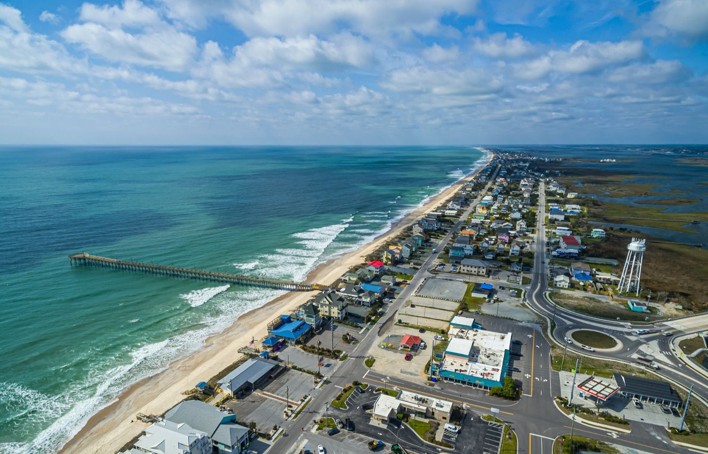

Below I have provided links for beach access points at both Surf City and North Topsail Island, as well as a map of the area. It was an experience finding parking sometimes, so hopefully this helps out.
https://www.surfcitync.gov/2395/Public-Beach-Accesses
https://www.google.com/maps/d/u/0/viewer?mid=1TgfGKhMz2bYohw1Y6B1Y66fXJK8&ll=34.525540303811304%2C-77.3561850846414&z=11&fbclid=IwAR3QvMMWvtSaIMEtor-2GvoBjHc_9tGtiqpxx4syZNkrlcfH5t4yizVFe9c